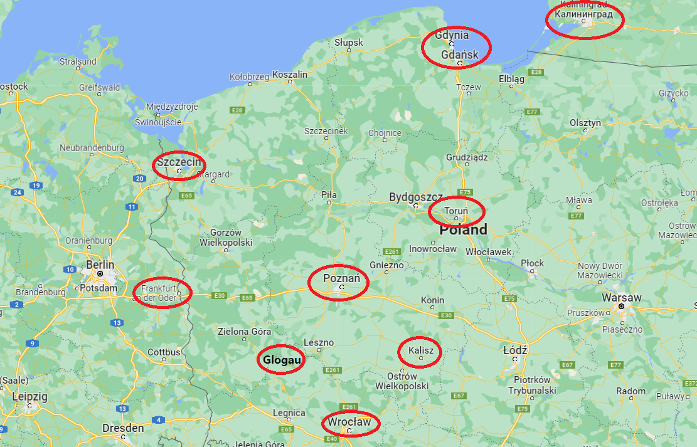
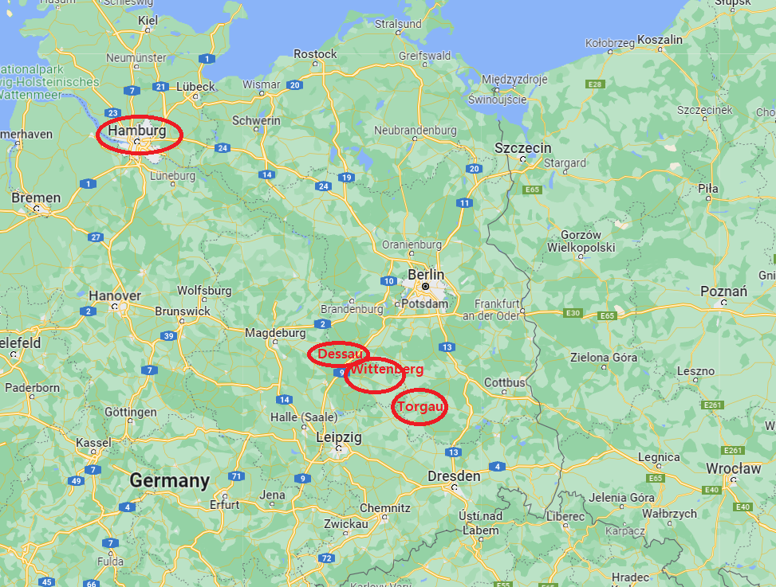
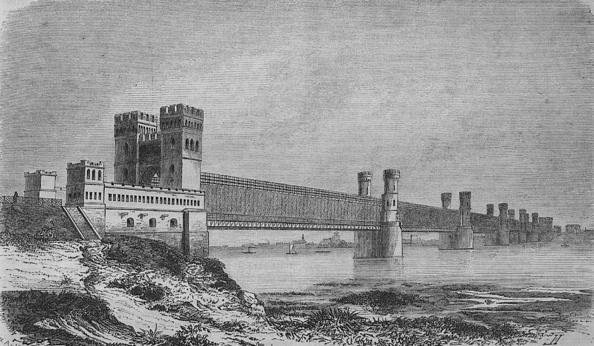
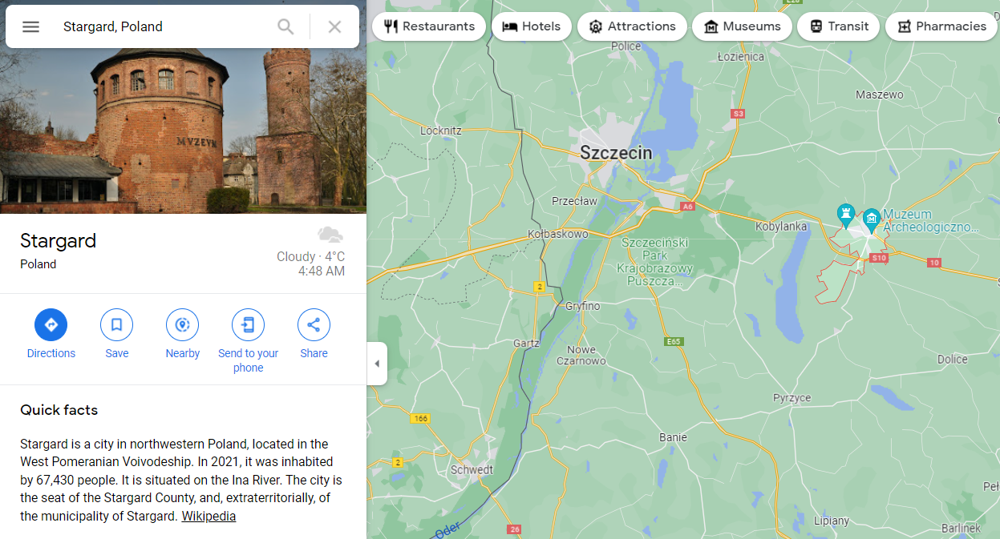
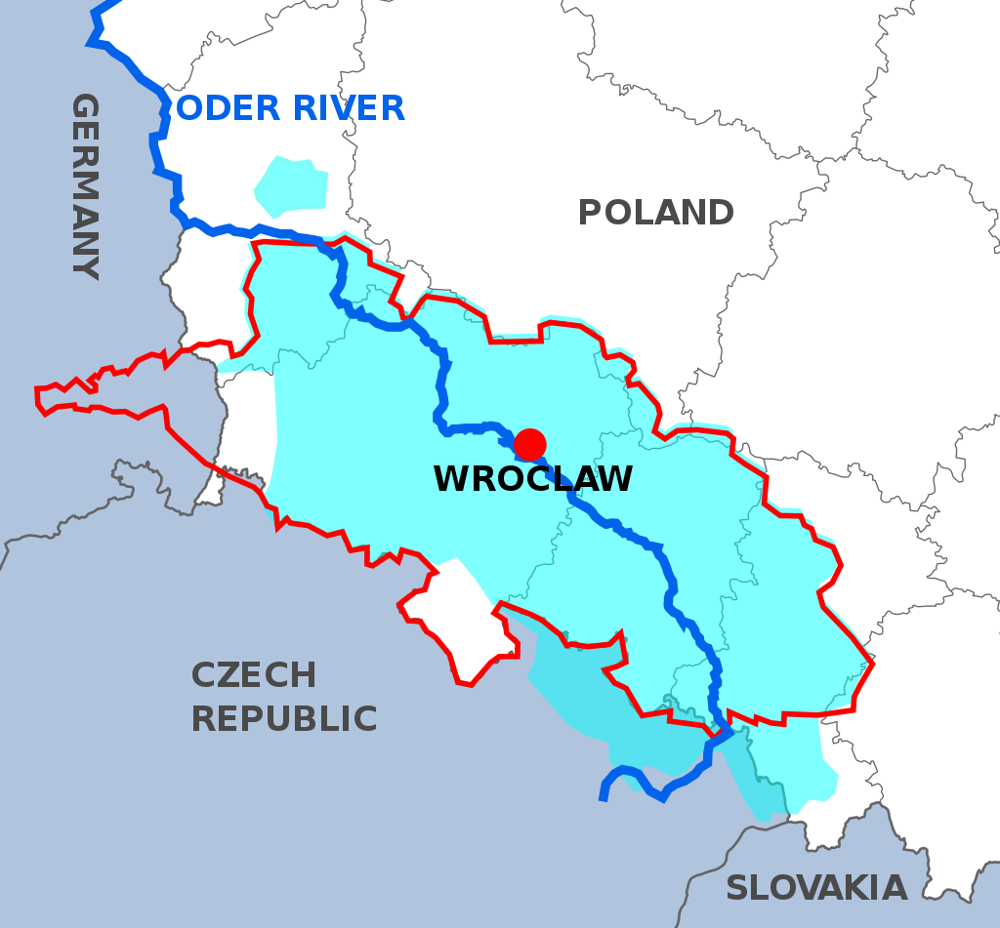
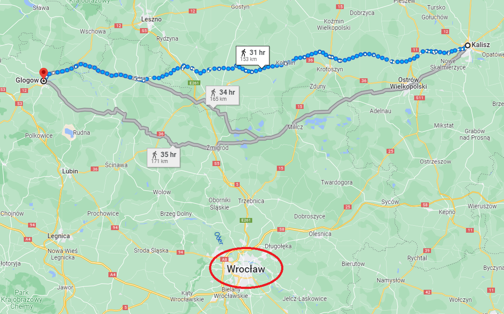

강들과 요새들 - 러시아군의 고민
게시: 2022-04-18T06:30:33+09:00
1813년 1월, 그랑다르메는 요크가 이끄는 프로이센군의 배신으로 인해 속절없는 후퇴를 계속 하고 있었습니다. 나폴레옹은 만반의 준비를 갖추는 지장이었으므로 후방의 방어도 공고히 하고 있었습니다. 그의 제1차 방어선은 당연히 폴란드 한 가운데를 흐르는 비스와 강이었습니다. 비스와 강에는 토룬(Torun), 모들린(Modlin) 등 바르샤바부터 단치히까지 일련의 견고한 요새들이 있었고, 나폴레옹은 이런 요새들에 수비대를 배치해두었습니다. 그러나 러시아 원정군이 워낙 크게 궤멸된 지라, 긴 비스와 강변을 따라 드문드문 박힌 요새들로는 감당이 되지 않았고, 뮈라는 속절없이 비스와 방어선을 버리고 일단 포젠(Posen, 폴란드어로는 포즈나니 Poznań)으로 후퇴했습니다.
(오데르 강변이나 비스와 강변의 많은 요새들은 도시를 끼고 건설되었지만, 모들린은 그렇지 않았습니다. 나레프(Narew) 강과 비스와 강의 합류지점인 이 곳에는 과거 17세기 중반 바르샤바까지 쳐들어왔던 스웨덴군의 병참기지가 있기도 했습니다만, 여기에 제대로 된 요새를 건설한 것은 바로 나폴레옹이었습니다. 바르샤바 공국을 세운 나폴레옹은 1806년 12월, 러시아의 위협에 대비하여 이 바르샤바 양수리(兩水里)에 요새를 건설할 것을 명했는데, 그것이 바로 모들린 요새입니다. 1813년 2월 이 요새 앞에 도착한 러시아군은 무려 3만6천의 병력을 동원하여 이 요새를 포위했는데, 이 곳을 수비하던 폴란드군은 거의 1년을 버텼고 결국 1813년 12월 1일에야 항복했습니다. 모들린은 비스와 강변의 요새들 중 최후로 항복한 요새입니다. 사진은 모들린 요새의 일부입니다.) 뮈라는 자신의 왕국인 나폴리 왕국의 정세 불안과 자신의 건강을 핑계로 1월 16일 그랑다르메의 지휘권을 외젠에게 넘기고 돌아가버렸고, 외젠은 잔존 병력 3만을 이끌고 오데르 강변의 프랑크푸르트(Frankfurt-am-Oder)로 퇴각했습니다. 별 대안이 없었던 나폴레옹은 1월 22일 그 조치를 승인하고, 이제 외젠이 지휘를 맡은 러시아 원정군의 잔존부대를 '엘베 방면군'(Armée de l'Elbe)이라고 부르기 시작했습니다. 나폴레옹이 외젠의 군대를 오데르 방면군이 아니라 엘베 방면군이라고 부른 것은 상당한 의미가 있었습니다. 사실상 폴란드 전체를 일단 포기한 것이며, 실제로는 오데르 강 방어선까지도 버린 것입니다. 비스와 강 다음의 방어선인 오데르 강에도 슈테틴, 퀴스트린, 글로가우 등의 주요 요새들이 있었는데도 이 방어선을 버린 것은 프로이센이 협조하지 않는다면 그걸 지킬 수가 없다고 판단한 것입니다. 즉, 나폴레옹은 이미 프로이센이 러시아 편에 붙을 것이라고 판단하고 있었습니다. 정작 프로이센 국왕인 프리드리히 빌헬름은 그에 대한 확신을 가지지 못하고 계속 우유부단한 행동을 하고 있던 것과는 정말 대조적이었습니다. 나폴레옹은 자신이 새롭게 편성할 군대를 이끌고 달려갈 때까지 외젠이 토르가우(Torgau) - 비텐베르크(Wittenberg) - 데사우(Dessau) - 함부르크의 엘베 방어선을 지켜내기를 기대했습니다. 나폴레옹이 이 엘베 방어선을 중시한 이유는 간단했습니다. 그걸 지켜야 작센과 튀링겐, 바이에른 등 주요 독일 위성국가들을 지킬 수 있기 때문이었습니다. 러시아가 독일 여러 국가들의 협조를 바랬던 것처럼 나폴레옹에게도 독일 동맹국들의 협력이 간절했는데, 러시아군이 각국 수도를 점령한 상황에서는 그들의 충성심을 기대하기 어려웠습니다.

(비스와 강과 오데르 강의 주요 요새들, 그리고 이번 본문에 나오는 칼리쉬와 포젠 등 주요 도시들의 위치입니다. 맨 아래의 브로츠워프는 오데르 강변의 도시이긴 하지만 당시 프랑스군의 요새가 아니라 프로이센의 거점이자 프리드리히 빌헬름이 피난처였습니다.)

(나폴레옹이 절대 지켜야 하는 마지노선으로 지정한 함부르크, 데사우, 비텐베르크, 토르가우 등의 엘베 강 요새들입니다.)
(비스와 강을 따라 건설된 요새들을 따라 가며 역사 탐방을 하는 관광 상품까지 있더군요. 이건 상당히 부러운 일입니다.)
결국 나폴레옹이 정성들여 구축했던 비스와 강변과 오데르 강변의 철옹성 요새들은 모두 헛수고였던 것일까요? 꼭 그렇지는 않았습니다. 뮈라는 후퇴하면서도 단치히에 3만, 토룬과 모들린에 총 7천 등 상당한 규모의 수비대를 비스와 강변의 요새들에 배치했습니다. 그리고 2군단과 3군단은 퀴스트린, 4군단은 글로가우, 1군단은 슈테틴 등 오데르 강변의 요새들에 배치했습니다. 결국 외젠의 지휘 하에 포젠을 거쳐 프랑크푸르트-암-오다로 후퇴했던 3만의 병력은 근위대와 8군단, 9군단 만을 지칭하는 것이었습니다. 이렇게 곳곳의 요새에 강력한 수비대를 배치했기 떄문에, 뒤를 추격하던 러시아군도 그런 요새들마다 그에 걸맞은 규모의 견제 병력을 배치할 수 밖에 없었습니다. 그런 러시아 추격대의 선봉은 비트겐슈타인(Wittgenstein)이 이끌고 있었는데, 12월 17일 네만 강을 건널 때만 해도 그의 부대는 3만5천의 병력과 191문의 포병대를 가진 막강한 것이었고, 그의 바로 왼편에는 시차고프(Pavel Chichagov) 제독이 이끄는 러시아 제3군 2만1천과 130문의 포병대가 함께 하고 있었습니다. 그러나 그는 당장 토룬 요새 앞에 시차고프의 병력 대부분인 128문의 포병대와 함께 1만2천의 병력을 묶어두어야 했고, 그리고 단치히 앞에도 1만2천의 병력을 남겨두어야 했습니다. 비트겐슈타인은 2월 2일 비스와 강을 단치히 바로 옆인 디르샤우(Drschau, 폴란드어로 츠줴프 Tczew)에서 건널 수 있었고 6일 후인 2월 8일 소수의 수비대가 배치된 필라우(Pillau) 요새의 항복을 받아낼 수 있었지만 그냥 딱 그 뿐이었습니다. 그는 오데르 강변의 강력한 요새 슈테틴 바로 코 앞에 있는 슈타르가르트(Stargard)에서 감히 더 전진하지 못하고 발이 묶였습니다. 여기저기에 수비대를 배치하느라 병력이 2만 이하로 크게 줄었기 때문이었습니다. 이는 네만 강을 건널 때는 50만 대군이었던 그랑 다르메가 모스크바에 입성할 때는 10만도 안 되었던 것과 비슷한 상황이었습니다.

(비스와 강 위에 놓인 디르샤우의 다리입니다. 그러나 이 다리가 건설된 것은 19세기 후반의 일이고, 나폴레옹 당시 후퇴하는 프랑스군이나 추격하는 러시아군은 모두 얼어붙은 비스와 강을 걸어서 건넜습니다. 만약 이 강이 얼어붙지 않았다면 프랑스군은 러시아군의 추격을 뿌리치지 못했을 것입니다.)

(지도 슈테틴 바로 오른쪽에 슈타르가르트가 보입니다. 왼쪽에 보이는 슈타르가르트의 사진 속 건물은 Baszta Tkaczy (직물공들의 탑)입니다. 이 성탑에 그런 이름이 붙은 이유는 유사시 이 성탑에 병력을 배치하고 지키는 의무는 이 도시의 직물공 길드에게 주어졌기 때문이라고 합니다.)
물론 비트겐슈타인의 부대는 선봉대이자 러시아군의 우익일 뿐이었습니다. 러시아군의 중앙은 토르마소프(Aleksandr Tormasov)의 1만7천과 112문, 빈칭게로더(Ferdinand von Wintzingerode)의 1만6천과 96문, 그리고 밀로라도비치(Mikhail Miloradovich)의 1만2천과 96문으로 이루어져 있었습니다. 게다가 좌익은 자켄(Fabian Gottlieb von der Osten-Sacken)이 이끄는 1만9천과 92문이 별도로 있었습니다. 그러나 이들은 비교적 상태가 멀쩡했던 그랑다르메의 잔존부대인 슈바르첸베르크(Karl zu Schwarzenberg)의 오스트리아군과 함께, 포니아토프스키가 이끄는 폴란드 병사들로 이루어진 제5 군단, 그리고 레이니에(Jean-Louis Reynier)가 이끄는 작센 병사들로 이루어진 제7 군단을 상대해야 했습니다. 그러나 이미 언급했다시피 오스트리아군은 싸울 의지가 없었습니다. 슈바르첸베르크는 1월 30일, 밀로라도비치와 협정을 맺고 바르샤바를 비워주고 폴란드의 옛 수도인 남쪽의 크라코프(Krakow)로 퇴각했으며, 러시아 원정의 피해를 아직 수습하지 못했던 포니아토프스키의 제5 군단도 오스트리아군을 따라 크라코프로 퇴각했습니다. 나폴레옹이 오스트리아군에게 명령한 것은 칼리쉬(Kalisz, 독일어로는 Kalisch)로 후퇴하라는 것이었으나 무시한 것이지요. 대신 레이니에의 제7 군단은 나폴레옹의 명령대로 칼리쉬로 이동했습니다. 2월 8일, 밀로라도비치는 바르샤바를 점령했고, 빈칭게로더는 레이니에를 추격했습니다. 알렉산드르와 함께 움직이던 쿠투조프의 사령부는 2월 5일 바르샤바 북서쪽인 프오츠크(Płock)까지 진출했습니다. 이렇게 보면 러시아군의 진격은 나름 순조로운 것처럼 보였지만, 러시아군은 내심 매우 불안하고 초조했습니다. 네만 강을 넘은 러시아군은 총 12만에 불과했지만 유럽 대륙은 드넓었고 진격할 때마다 여기저기 수비대를 남겨야 했습니다. 특히 나폴레옹이 후퇴하면서 요소요소에 알박기를 해둔 비스와 강변과 오데르 강변의 요새들은 큰 위협이었고, 그 앞에 깔아두어야 하는 견제 부대들의 수만 해도 적지 않았습니다. 나폴레옹도 러시아 내지로 진격하면서 리투아니아 일대의 폴란드인들을 징집하여 후방 연락로 확보를 위한 수비대로 활용하려 했으나 실패한 일이 있었습니다만, 1813년 독일로 진격하는 러시아군도 계속 이렇게 수비대를 남겨두고 진격할 수는 없었습니다. 이런 식으로 갔다가는 1812년에 나폴레옹이 맛봐야 했던 참패를 1813년에 러시아군이 재연할 판국이었습니다. 러시아는 반드시 독일 지역에 동맹국을 만들어야 했습니다. 게다가 상대는 나폴레옹이었습니다. 대체 언제 어떻게 회심의 반격을 가해올지 불안했습니다. 바르샤바 점령 6일 전인 2월 2일 비트겐슈타인에게 쓴 쿠투조프의 편지를 보면 이때 러시아군의 전략적 난관을 잘 볼 수 있습니다. "바르샤바, 모들린, 토룬은 여전히 적이 점거하고 있소. 레이니에가 비스와 강을 건넌 이후 어디로 갈지 여전히 알지 못하고 있는데다, 왜 프랑스군이 사령부를 포젠에 차렸는지 그 의도로 모르겠소. 오데르 강부터 반격을 시작하여 토룬과 모들린 등 비스와 강변의 요새들과 합동 작전을 펼치려는 것인지, 아니면 레이니에와 합류한 뒤 오데르 강으로 후퇴한 뒤 거기서 방어선을 꾸미려는 것인지? 그런 사항들에 대해 아무 것도 아는 것이 없다보니 귀관에 대해서도 명확한 작전 명령을 내릴 수가 없구료." 쿠투조프의 이런 고민은 2월 12일 포젠에서 외젠이 후퇴하면서 해결되었습니다. 슈테틴 요새 앞에서 오데르 강을 넘지 못하고 있던 비트겐슈타인은 방향을 남동쪽으로 돌려 2월 13일 즉각 포젠에 입성했고, 쿠투조프는 이제 적어도 폴란드에서는 프랑스군의 반격이 없을 것이라는 확신을 가질 수 있었습니다. 이어서 빈칭게로더도 바로 전날인 2월 12일 칼리쉬에 도착한 레이니에를 따라잡고 2월 13일 칼리쉬 외곽에서 레이니에를 공격했습니다. 후퇴하느라 사기가 떨어진 레이니에의 작센 병사들은 당연히 상대가 되지 않았습니다. 이들은 1천명의 사상자와 함께 2천의 포로를 냈으나 레이니에의 침착한 지휘 하에 9천 정도의 병력은 오데르 강변의 글로가우(Glogau) 방면으로 철수했습니다. 레이니에의 제7 군단이 철옹성인 글로가우로 무사히 들어간다면 여기에 또 많은 러시아군의 발이 묶여야 했고, 러시아군은 이를 막아야 했습니다. 칼리쉬에서 글로가우까지는 약 150km, 약 5~6일 걸리는 행군거리였습니다. 그런데 글로가우는 넓게 봐서 슐레지엔(Schlesien) 지방에 속한 요새였고, 슐레지엔은 나폴레옹이 겁장이 프리드리히 빌헬름에게 허락한 합법적 피난처로서, 프리드리히 빌헬름 본인이 바로 그 순간 칼리쉬와 글로가우 사이의 중간 약간 남쪽에 있는 블레슬라우에 가용한 프로이센 병력을 이끌고 웅크리고 있었습니다. 알렉산드르는 즉각 프리드리히 빌헬름에게 편지를 써서 레이니에가 글로가우로 들어가지 못하게 중간에서 요격해줄 것을 요청했습니다. 알렉산드르는 여태까지 프리드리히 빌헬름에게 동맹을 요청하는 애특한 편지를 여러 통 보냈지만 우유부단한 프리드리히 빌헬름은 결단을 내리지 못하고 있었고, 여전히 러시아와 프로이센은 공식적인 교전 국가로서 적국 관계였습니다. 적국으로부터 합동작전 요청이 들어온 이 역사적 순간에 과연 프리드리히 빌헬름은 어떤 결정을 내렸을까요?

(영어로는 사일리지아(Silesia)라고 하는 슐레지엔 지방입니다. 전통적으로는 독일어 인구가 훨씬 더 많은 독일계 지역입니다만, 지금은 폴란드 땅이 되어 있습니다. 브레슬라우도 브로츠워프가 되었고요. 이 모든 것이 히틀러 탓입니다.)

(칼리쉬와 글로가우, 그리고 브레슬라우의 운명적인 삼각 관계를 보십시요.) Source : The Life of Napoleon Bonaparte, by William Milligan Sloane Napoleon and the Struggle for Germany, by Leggiere, Michael V
https://en.wikipedia.org/wiki/Oder%E2%80%93Neisse_line https://en.wikipedia.org/wiki/Silesia https://en.wikipedia.org/wiki/Kalisz https://www.forte-cultura.eu/Reiseempfehlungen/Kulturreisen/5_PL-Vistula%20Fortresses_North.pdf https://en.wikipedia.org/wiki/Toru%C5%84 https://en.wikipedia.org/wiki/Frankfurt_(Oder) https://en.wikipedia.org/wiki/S%C5%82ubice https://en.wikipedia.org/wiki/Kalisch_Review https://pl.wikipedia.org/wiki/Baszta_Tkaczy https://en.wikipedia.org/wiki/Tczew